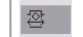

The Open Adapter is a functional component that acts as a bridge between similar or different technologies, enabling seamless communication. It serves as a plug-and-play alternative to OPC UA, without its typical limitations or prerequisites. This approach simplifies integration by removing dependencies and offering greater flexibility and automation.
The steps below guide you through configuring, exporting, importing, and validating the connection to enable reliable data exchange.
Create two solutions: Solution_1 and Solution_2.
In both solutions, right-click on each solution then go to
.In the IEC 61499 pad, go to Communication and enable the checkbox Enable Reliable Cross Communication protocol for all devices.
Right-click on to display the File Wizard dialog box .
Give a Name to your adapter.
Go to the properties tab of the adapter
.Under Attribute, set Configuration.FB.OpenAdapter to True if configuring an Open Adapter, or to False if configuring a Normal Adapter.
Create the CAT and add the Adapter:
Right-click on to create a CAT.
Drag and drop the Adapter into the CAT.
Use one Open Adapter as Socket type (ADP1_S1) and the other as Plug type (ADP1_P1).
Instantiate and Map the CAT:
Go to the system tab.
Instantiate the CAT in your application and place it in the System tab.
Right-click on to map it to the controller.
Check Open Adapter interfaces:
Open the Open Adapter Editor

You will see the interfaces automatically created for Solution_1.
Export the Configuration:
Go to Solution Explorer and right-click on Solution_1, then click on Export.
Use the Export icon in the Open Adapters editor to save the interface connection configuration.
Import the configuration:
Open Solution_2.
Right-click on to select the file exported from Solution_1.
Create CAT and Use Imported Adapters:
Create a new CAT in the Application.
Drag and drop the imported adapters into it: Use one Open Adapter as Socket (ADP1_S2) and the other as Plug (ADP1_P2) then reverse it.
Save the CAT.
Instantiate and Map the CAT:
Open the System tab.
Instantiate the CAT in your application and place it in the system tab.
Right-click on to map it to the controller.
Import and Map the Interface:
Open the Open Adapter Editor
in Solution_2 and use the Import icon to import the configuration exported from Solution_1.Map the imported interface connections to their corresponding elements in Solution_2.
Export the mapped interface configuration from Solution_2 to Solution_1 .
Back in Solution_1, import the final configuration from Solution_2.
Result: This step automatically completes the interface mapping.
Deploy and Simulate:
Go to the Deploy & Diagnostic tab.
Deploy both solutions to both controllers.
Open the System tab and add a watch to the Applications.
Simulate data and verify that data flows correctly from Solution_1 to Solution_2.